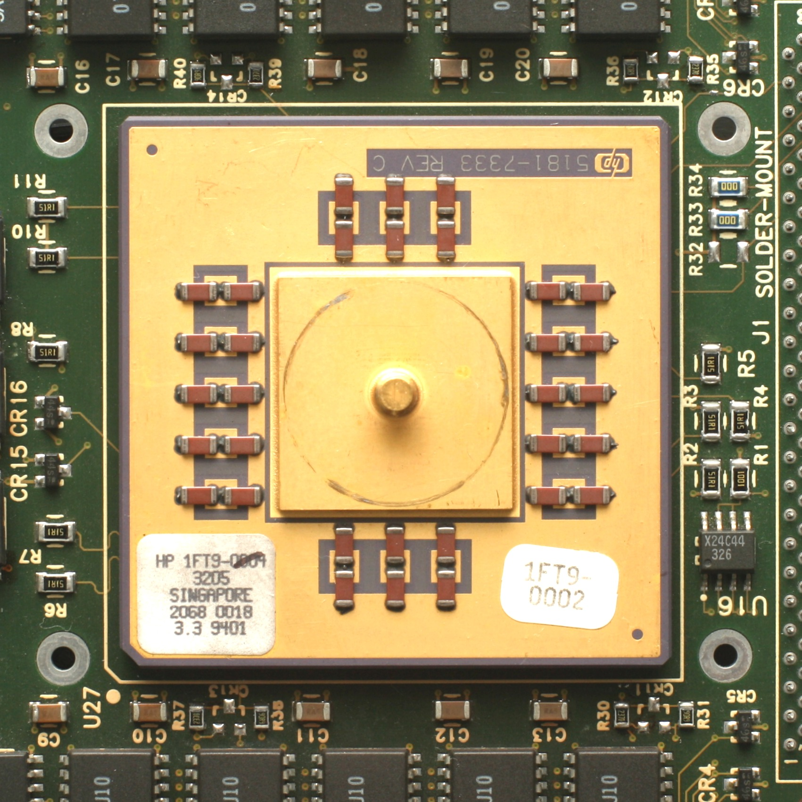

Le processeur RISC
L'architecture RISC (Reduced Instruction Set Computer) est une architecture de processeur qui remonte aux années 1970. Le principe est d'utiliser un jeu d’instructions simples et de même taille, et n’accéder à la mémoire que pour charger et décharger les registres (niveau de mémoire avant la mémoire cache).
Cette architecture a plusieurs avantages :
- Rapidité de décodage et d’exécution
- Simplification de la gestion de la mémoire
- Accroissement des performances du système informatique
Exemple : processeur HP RISC 7150

 Accueil
Accueil